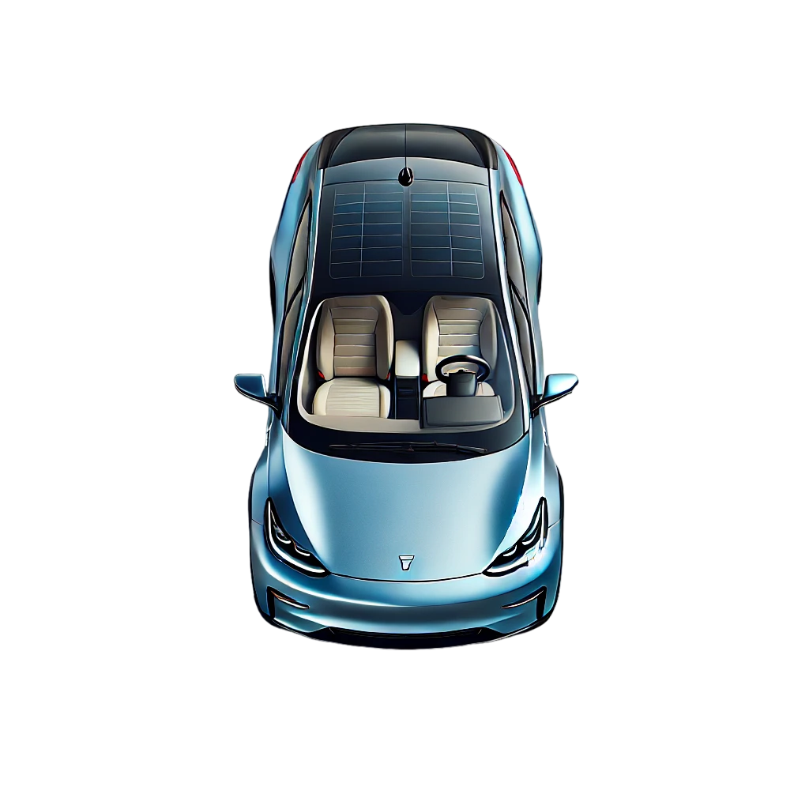

About Me
Hello! I'm a postgraduate in Power Electronics and Power Systems from IIT Bombay and hold a bachelor's degree in Electrical Engineering from NIT Surat. I specialize in power electronics necessary for the operation of Electrical Vehicles and Renewable Energy systems. My goal is to contribute to a sustainable future through innovative energy solutions. Let's connect and work together towards a greener world.
Experience
-
August 2024-Present
OLA ELECTRIC
Assistant Manager-Vehicle Engineering
Details of your experience.
-
July 2021-July 2024
IIT BOMBAY
Research Assistant
- Oversaw the planning and coordination of laboratory sessions.
- Designed lab experiments, supervised students, and ensured that safety protocols were followed.
- Provided technical support and guidance to students.
- Demonstrated leadership and management skills in creating a productive and engaging learning environment, helping students develop practical skills and knowledge in Electrical Drives and Power Electronics.
-
July 2018-April 2019
WELSPUN CORP.LTD
Graduate Engineer Trainee
- Responsible for maintenance, fault diagnosis & restoration at Tack, OD and ID welding stations.
- Led initiatives to reduce operational costs by monitoring energy consumption at stopping stations.
- Developed a machine learning model to predict defective pipes using a classification algorithm.
-
July 2016-May 2018
ELECTRICAL ENGINEERING SOCIETY, NIT SURAT
Informal Head
Led a group of 30 members throughout the year, organised industrial talks and engaging activities.
-
Dec 2016-Jan 2017
OIL AND NATURAL GAS CORPORATION
Trainee
Interned in the Electrical Maintenance department located in Ahmedabad, focusing on practical aspects of electrical machines used in oil rigs and refineries.
Education
IIT Bombay 2018-2020
Master of Technology in Power Electronics and Power Systems
CPI - 9.56
Semester 6 (Masters Thesis Project Stage II)(SPI - 10)
Designed modular PCBs for proposed 800 V SiC based 6-phase dual traction inverter using ALTIUM professional designer. Tested the inverter and performed experimentations to demonstrate the modulation technique for DC-link capacitor and common mode current reduction.
Semester 5 (Masters Thesis Project Stage I)(SPI - 10)
Performed thorough literature survey of inverter topologies existing in the research papers and determined the traction inverter topology suitable for automotive traction inverters for the purpose of making the power-train compact and reduce common mode current.
Semester 4 (Additional Courses)(SPI - 0)
Embedded Systems Design
Semester 3 (Credit Courses)(SPI - 9)
High-Frequency Magnetics Design for Power Electronics, Microprocessor Applications in Power Electronics.
Seminar - Challenges and potential solutions in fast switching SiC devices.
Semester 2 (Credit Courses)(SPI - 8.75)
Advanced Power Electronics, Power Electronic Converters for Renewable Energy, Design and Evaluation of Photovoltaic Power Plants, Introduction to Machine Learning.
Semester 1 (Credit Courses)(SPI - 9.25)
Basics of Power Electronics, Computer Aided Power System Analysis, Electric Drives, Power Systems & Power Electronics Laboratory.
NIT Surat 2014-2018
Bachelor of Technology in Electrical Engineering
CPI - 6.68
Saint Pauls School 2010-11 & 2012-13
Central Board of Secondary Education
- XII Percentage - 91.6
Subjects: Physics, Chemistry, Mathematics, Informatics Practice, English Communication. - X CGPA - 8.6/10
Subjects: Science, Mathematics, Social Sciences, Hindi, English.
Projects
Compact SiC based Automotive Inverter for future 4-wheeler BEVs
Designed a high-power-density, SiC-based 75kW automotive inverter with an 800V DC bus architecture. Investigated 2-level and 3-level voltage source topologies to mitigate DC link capacitor ripple current. Conducted comparative analysis of various configurations, evaluating ripple current, device count, and efficiency. Identified a suitable topology through simulations, followed by hardware design and performance validation. Provided a systematic approach to efficient inverter topology selection, advancing high-power-density automotive inverters.
View ProjectChallenges and Potential solutions associated with fast switching SiC devices
Conducted a literature review on the challenges and potential solutions associated with fast switching of SiC devices. Investigated issues like high dv/dt and di/dt, which complicate their adoption in power electronic converters. Evaluated various configurations and proposed solutions to mitigate these challenges, enhancing the efficiency and reliability of SiC-based systems. The research provided insights into the superior properties of SiC, such as higher drift velocity and critical electrical fields, leading to better performance in high-power density applications.
View ProjectDesign and Simulation of a 7 kW DC Drive for Electric Vehicles
Analyzed and designed a 2-stage 7 kW DC drive for a separately excited DC motor rated at 350V. Regulated the DC bus voltage and implemented closed-loop control for current sharing by battery packs based on their State of Charge (SoC). Addressed challenges in paralleling DC-DC converters, such as uneven current sharing and poor transient response. Conducted system simulations in PSCAD to accommodate dynamically changing power and torque requirements, enhancing the efficiency and reliability of electric vehicle battery systems.
View ProjectReal and Reactive Power Control of Solar PV Fed Grid-Tied 3 Phase VSI
Selected the DC bus voltage based on the required line voltage of the grid and modulation index. Designed a Proportional-Resonant (PR) compensator and controlled real and reactive power in the αβ0 frame using MATLAB Simulink. Designed a phase-locked loop (PLL) compensator for achieving decoupled real and reactive power control in the dq0 frame
View ProjectDesign and Analysis of a 5kW Push-Pull DC-DC Converter
Analyzed and designed a PCB for a 5kW push-pull converter with 400V input and 600V output. Simulated and analyzed the converter’s performance using LTSpice with selected SPICE models of MOSFETs and diodes. Implemented open-loop control of output voltage using the ePWM module for a fixed load. Focused on achieving bidirectional excitation of the transformer to enhance efficiency and reliability. Demonstrated the converter's advantages such as reduced size and weight, making it suitable for auxiliary applications in automotive systems.
View ProjectFoil Thickness Design & Fidelity Analysis of Core Loss Estimation Techniques for high frequency inductors
Optimized foil thickness design for high frequency inductors using Dowell’s equations to minimize copper losses in high-frequency DC-DC converters. Assessed core loss estimation methods against ANSYS Maxwell simulations, validating theoretical calculations. Conducted detailed simulations using MATLAB and Ansys Maxwell to enhance the efficiency of magnetic components.
View ProjectIoT-enabled Smart Energy Monitoring System with Appliance Control Functionality
Designed a 98% accurate, low-cost IoT-based Smart Energy Monitoring System with Appliance Control utilizing Blynk protocol to communicate data over Wi-Fi. Developed and deployed firmware logic on Raspberry Pi Pico W for auto-tripping of the load in under-voltage and over-voltage conditions. Created an interactive GUI mobile app with a dashboard to monitor dynamic energy usage, billing, and remaining quota of units. Implemented features like voltage fluctuation protection, auto-resumption of data flow, and continuous energy measurement without WiFi, using Raspberry Pi Pico W and various sensors.
View Project